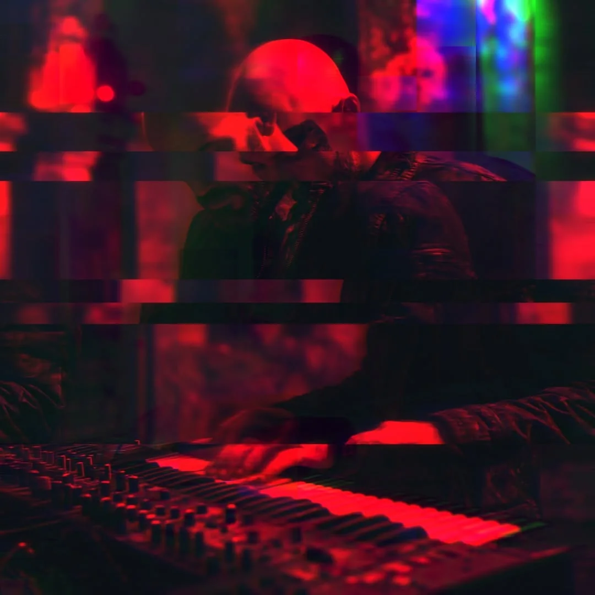
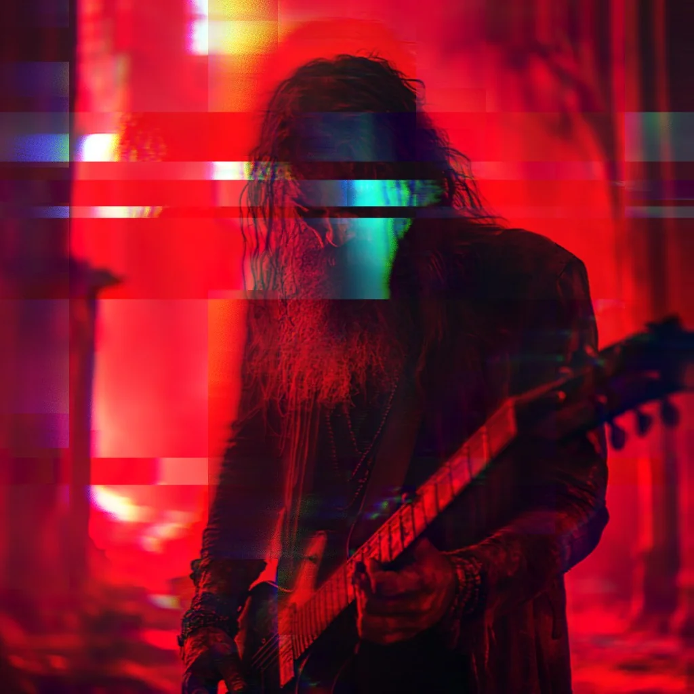
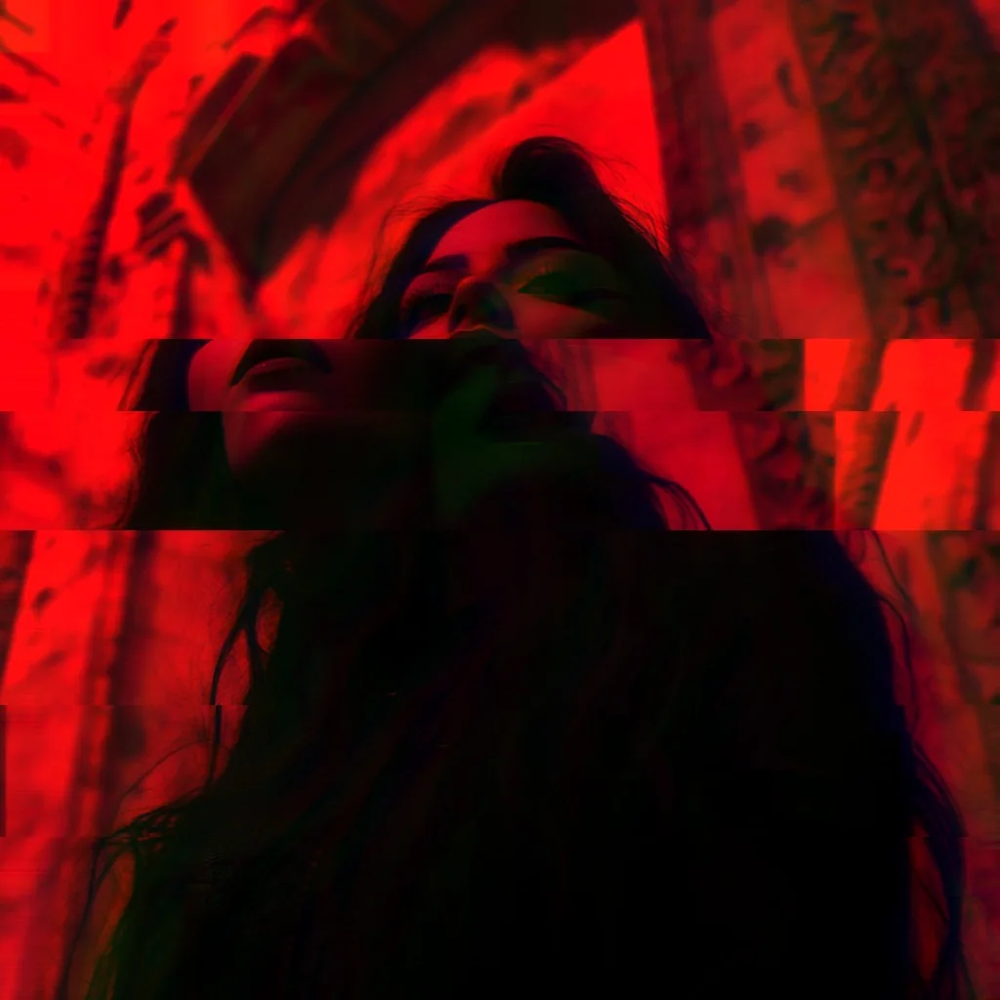

Tú que habitas en los fragmentos, recorres las grietas de su separación.
Cuando la ilusión se desvanezca,
descienda fuego
Descienda trabaja sobre un concepto central de la mística: la chispa que olvidó su origen. Puede leerse como el recorrido del alma individual o como el de la chispa divina que comparte el exilio de la creación.
La paradoja de fondo es la de la contracción primordial: lo divino se retira para que exista algo distinto de sí mismo, pero esa alteridad produce una conciencia que se experimenta como separada. Esa tensión no se resuelve, sino que se atraviesa, estación por estación, hasta el punto en que la pregunta pierde su fundamento.
La infinitud se repliega y abre un hueco donde aparece lo separado.
La existencia, incapaz de sostener la totalidad, se fragmenta
y queda en exilio, como el lirio entre espinos. Pero en lo más
profundo de su fractura, un impulso permanece intacto.
Un viaje a través de la dualidad, para recordar Su unidad.

